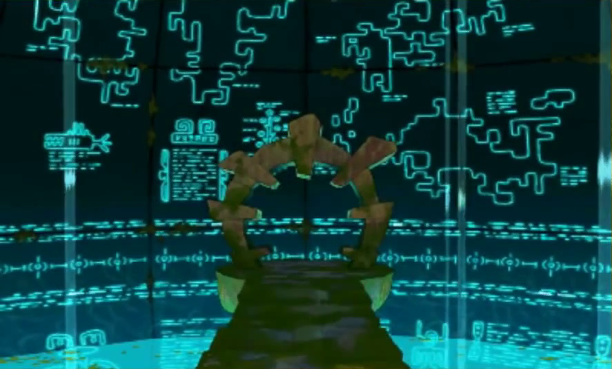

Au sommet de sa gloire, le Professeur Layton décide de tirer sa révérence avec un ultime épisode venant clore la trilogie Aslantes déjà amorcée et mettant fin à ses aventures. Pour l’occasion, Level 5 ne s’est pas tourné les pouces et a décidé d’offrir un très beau cadeau d’adieu aux fans du gentleman au haut-de-forme. Détails dans cet article.
Le jeu commence, comme c’est original, par la réception d’une lettre par le professeur Layton. Celle-ci est envoyée par l’éminent archéologue Desmond Sycamore et demande l’aide du professeur à propos de ce qui semble être la découverte du siècle : une momie vivante prise dans les glaces. Le professeur et ses deux compagnons : Emy, son assistante et Luke, son apprenti, embarquent dans le Bostonius, l’aéronef personnel de Desmond, pour retrouver ce dernier.
Après avoir libéré la momie de sa prison gelée, le joueur se rend compte qu’il s’agit d’un émissaire envoyé par la civilisation Aslantes pour s’assurer que leur héritage soit transmis. Un fantastique voyage aux quatre coins du monde débutera alors pour récupérer les cinq œufs Aslantes et invoquer le dragon Sh- et découvrir les secrets de la civilisation disparue. L’épopée ne sera pas de tout repos, la douteuse organisation TARGET poursuivant le même but que nos héros et étant prêt à tout pour leur damer le pion.
Une des raisons de l’excellence du troisième opus était le fait de vivre l’aventure en groupe, l’apport de multiples points de vues octroyait fraîcheur et diversité au jeu. Level 5 avait bien compris ça en incluant le personnage d’Emy définitivement à la série en tant que personnage principal, ici c’est l’émissaire Aslante Gaya et l’archéologue Desmond Sycamore qui viennent grossir les rangs. On aurait pu craindre que la petite nouvelle ait du mal à s’intégrer au paysage étant donner ses nombreuses années d’hibernation, mais venant d’une civilisation plus avancée que la nôtre, il n’en est rien. Peu surprise de nos avancées technologiques, Gaya ne connait pas nos coutumes ni notre écosystème et apporte un point de vue extérieur intéressant sur notre monde, un peu comme le ferait un extra-terrestre. Desmond Sycamore est un peu un alter ego de Layton, parlant en langage fleuri et étant adepte des bonnes manières. Les liens que possède ce personnage avec les Aslantes et ces impressionnantes connaissances dans le domaine en font néanmoins un personnage mystérieux et possèdent un background torturé.
Le voyage est au cœur du jeu et on est bien loin de passer tout un pan de l’aventure dans des villages isolés comme c’est le cas dans les autres opus. Ici, c’est un total de 8 villes très différentes les unes des autres que le joueur parcourra. 5 d’entre elles pourront être traversées dans l’ordre voulu et seront rattachées à un mystère récompensant le joueur d’un œuf Aslante une fois résolu. Si l’on rajoute à ça l’équipe de personnage, l’aéronef ainsi que la bonne humeur inhérente au titre, cet épisode possède, plus que jamais, des airs de RPG japonais, l’influence manga et les combats en moins.

Comme je l’ai dit, la plus grosse partie du jeu va consister à traverser 5 villes pour récupérer des œufs Aslantes. Chacune de ses villes possède sa propre intrigue : dans l’une d’elles, par ex., tous les adultes auront sombré dans un profond sommeil et vous devrez découvrir pourquoi. Résoudre ces mystères vous en fera apprendre plus sur les Aslantes tout en entretenant un grand suspense sur leur véritable nature, leur niveau d’avancée technologique ainsi que la nature de leur héritage. Arrivé à la dernière partie de jeu, les choses s’accélèrent et les révélations et rebondissements pleuvent comme on a l’habitude de le voir dans la série, un des gros objectifs était de contenter les fans et on en apprend beaucoup sur les différents personnages et les relations qui les unissent. On est tout de même loin de ce que proposait Le Destin Perdu en terme de qualité dramaturgique (sûrement à cause des différentes petites trames appartenant à chaque ville et qui occupent une bonne partie de jeu) mais on est dans la moyenne des bons Layton et on oublie, sans regret, le très moyen dernier épisode.
Et on en vient à la réalisation graphique qui, je le dis d’emblée, est exceptionnel. Les artistes de Level 5 se sont défoncés et ont pu exploiter tous leurs potentiels créatifs grâce aux environnements très différents du jeu et grâce à leur maîtrise de la console (à tel point qu’on leur pardonne complètement de s’être servis de Layton 5 comme laboratoire pour faire Layton 6).
Comment ont-ils fait pour rendre le jeu si beau ? Premièrement en utilisant des sprites 2D en complément de la modélisation 3D, ce qu’il n’avait pas fait dans Le Masque des Miracles. La vision du joueur est donc dupée, alors qu’il croit faire face à un environnement entièrement en 3D, une multitude d’éléments sont en fait des dessins fait main. Les nombreux dessins, de très bonnes factures et possédant souvent de très belles animations, subliment complètement les décors du jeu et le rendu est absolument saisissant.
Le deuxième atout de la réalisation graphique est sûrement le niveau de détail impressionnant que le jeu atteint. C’est juste hallucinant, voici quelques exemples qui m’ont décroché la mâchoire en début de jeu : devant l’Université de Grensheller, en étant attentif, on peut remarquer que toutes les fenêtres de l’établissement reflètent le ciel qui se mouve en arrière plan (!!) ; dans le centre-ville de Londres, c’est un véritable trafic routier qui a été simulé et qui a lieu dans un coin de l’écran, si on regarde dans le ciel à ce moment, un gigantesque dirigeable effectue lentement des allers-retours loin dans le ciel (la distance d’affichage est saisissante) ; dans un des premiers écrans de Carpington, particulièrement animé, si on coupe la 3D et qu’on approche de l’écran, on peut voir que les tout petits buissons situés en arrière plan bougent au gré du vent…
Le jeu est, de plus, particulièrement animé, combiné avec le souci du détail qu’ont eu les artistes sur chaque décor du jeu, on obtient des décors qui sont particulièrement riches et vivants. C’est bien simple, dans Layton 6 là où on passe le plus de temps, ce n’est pas lors de la résolution des énigmes ni même lorsqu’on parle aux personnages, c’est lorsqu’on arrive dans un nouvel écran et qu’on passe un long moment à parcourir ce dernier de long en large pour repérer tous les détails et voir jusqu’où vont chaque animation faite par les graphistes. Tout cela en prenant des baffes visuelles à chaque instant par l’incroyable travail artistique abattu sur le jeu.
La 3D stéréoscopique n’apporte pas grand-chose en terme de gameplay mais l’effet de profondeur est tellement bien exploité, que ce soit durant les énigmes ou les phases d’exploration qu’il serait criminel de s’en passer. Celle-ci sublime encore les décors du jeu et se paye même le luxe de s’essayer à quelques effets de style qu’on ne trouve pas dans les autres jeux. Le meilleur exemple se trouve sûrement sur l’écran illustrant Gaia prise dans les glaces, alors que toute la scène se passe en arrière plan, une très fine brume, difficilement percevable, se déplace en premier plan, l’effet est absolument saisissant.
Et allez pour en rajouter une couche sur la qualité de la réalisation graphique, sachez que Layton 6 est bardé d’interaction avec le décor, c’est le premier jeu de la série à les utiliser de manière vraiment significative, de façon aussi nombreuse et surtout, du début à la fin du jeu. Les visages des différents personnages ont aussi bénéficié de l’apport des sprites 2D et ont regagnés l’aspect BD qu’ils avaient dans les épisodes DS. Enfin, les cinématiques 3D sont toujours présentes et illustrent toujours magnifiquement le jeu.
Comme toujours les doublages français sont présents et de qualités.
Le niveau de difficulté des énigmes a, semble t-il, diminué encore un peu et ce sont toujours des énigmes très accessibles qui nous sont proposées (il est loin le temps des taquins infernaux, dont la série m’avait personnellement complètement dégoutté). Il est difficile de dire si c’est une bonne ou une mauvaise chose, les personnes ne jouant au jeu que pour les casse-têtes qu’il propose pourront voir ça d’un mauvais œil. Pour ma part, j’ai trouvé que cela dynamisait plus le jeu et rendait plus agréable la résolution d’énigmes.
Une des grosses nouveautés de cet épisode en termes de gameplay, c’est l’ajout d’un système de quêtes annexes (quand je vous disais que le jeu ressemblait à un JRPG). A chaque fois que vous terminerez un niveau, de nouveaux articles s’ajouteront au « World Times », une gazette consultable à tout moment du jeu. Chacun de ces articles porteront sur un fait divers, mystérieux ou simplement intriguant, s’étant déroulé dans une ville déjà visitée. Au terme d’une énigme à résoudre sur place, le joueur sera récompensé par la découverte d’un nouvel écran à visiter ou par l’obtention d’un objet à collectionner. Ce système permet de briser la monotonie de jeu, de visiter d’un œil nouveau les niveaux de jeu qui peuvent avoir légèrement changés entre-temps mais aussi de profiter de nouvelles énigmes proposées par les villageois. Etant donner que les énigmes sont plus accessibles qu’auparavant, on prend beaucoup de plaisir à faire les quêtes annexes en résolvant toutes les énigmes se trouvant sur notre passage.
Une nouveauté mineure est la chasse au mot qui se base sur l’utilisation du Streetpass (à noter qu’il est aussi possible d’utiliser des pièces de jeu 3DS).
Outre les habituelles pièces S.O.S. et les objets de collection à chercher dans les décors, vous aurez aussi des objets spéciaux dont les noms s’ajouteront à votre liste de mots une fois découverts. A partir de votre liste de mots, vous pourrez constituer un défi comportant 3 noms d’objets et le partager via Streetpass. Lorsque d’autres joueurs recevront ce défi, ils devront trouver les 3 objets en question en ayant pour seules indications le nom qu’ils portent. Une fois les 3 objets trouvés, ils gagneront des points qu’ils pourront échanger contre des objets venant décorer le Bostonius ainsi que divers bonus. Si certains objets sont particulièrement faciles à trouver à cause de noms qui les rattachent à des endroits très précis, d’autres portent des dénominations n’aidant pas beaucoup à les localiser. Ce système n’est pas un des atouts principaux du jeu, cependant il est sympathique et s’il n’était pas gagné d’ajouter une fonctionnalité Streetpass sur le jeu, Level 5 s’en est sorti de façon ingénieuse.
Comme d’habitude, petit tour d’horizon sur les 3 mini-jeux proposés par Layton 6.
Prêt-à-porter : Ce mini-jeu vous proposera de confectionner des tenues devant habiller des personnages féminins rencontrés durant le jeu. Les tenues devront être confectionnées en associant plusieurs habits (haut, bas, chaussures…) et en répondant à diverses exigences imposées par les clientes (la tenue devra être assez mignonne, pas trop sportive, comporter au moins un article jaune…). Si vous confectionnez la tenue des rêves de votre cliente, vous pourrez la voir la revêtir. Le mini-jeu devient d’une extrême facilité une fois que vous possédez toutes les tenues du jeu mais il reste très plaisant à jouer et est scénarisé.
Noix et noisette : Dans ce mini-jeu vous incarnerez un écureuil qui devra faire rentrer une noisette dans une réserve. L’écureuil sera chaque fois juché sur une plate-forme supérieure et pourra lancer deux types d’objets pour accomplir son but : les rochers et les glands, ces derniers se transformant en arbre indestructible si plantés dans le sol. Certains terrains sont relativement complexes et il n’existe souvent qu’une seule façon de procéder, mini-jeu sympa là aussi même si certains des derniers terrains peuvent rebuter un peu.
Jardin enchanté : Le Jardin enchanté vous proposera de faire fleurir tous les arbres d’un jardin en plantant des bourgeons à des endroits stratégiques. Chaque bourgeon, une fois fleurit, fera lui-même fleurir tout végétaux se trouvant dans son rayon d’action. En sachant que vous disposez de bourgeons disposant de rayons d’actions très différents les uns des autres et que le terrain est rempli de toutes sortes d’obstacles comme des barrières ou des champignons empoisonnés, il faudra que vous fassiez en sorte que la réaction en chaîne, démarrant en un point donné se déroule au mieux pour pouvoir accomplir l’objectif. S’il a l’air compliqué, le mini-jeu est en réalité très facile : il vous est donné bien plus de bourgeons que nécessaire à chaque fois et, au contraire de Noix et noisette, il existe bien plus d’une possibilité pour accomplir votre but. C’est donc un mini-jeu pas prise de tête, ce qui pourra être apprécié ou non selon le type de joueur.
Il existe aussi un mini-jeu faisant appel aux réflexes du joueur et qui à lieu lors d’une séquence animé disposant d’une excellente mise en scène. Etant donner qu’il n’est pas possible d’y rejouer, je n’en parlerai pas plus que ça.
Le jeu propose une durée de vie un poil plus longue que son prédécesseur, étant donner le contenu supplémentaire apporté.
Il faudra donc toujours au minimum 15 à 20 heures de jeu pour voir le bout de l’aventure principal et 10 à 15 heures pour bien faire le tour du jeu. Le jeu comporte tout un tas de défis supplémentaires, augmentant la durée de vie : la recherche des objets, mots et épisodes non trouvés, les énigmes restantes, les mini-jeux à compléter, les “Défis du professeur” (des énigmes vraiment corsées) ainsi que les 365 énigmes journalières à télécharger. Dans le cas où vous auriez acheté Le masque des Miracles vous aurez droit à certains bonus dont 20 énigmes supplémentaires (pfiou).
Les bonus restent les mêmes que dans les autres opus : galeries de personnages, CG, Jukebox, possibilité de revoir toutes les cinématiques, etc.
Ce qui caractérise Professeur Layton et l’Héritage des Aslantes, comme chaque jeu de la série, c’est une richesse et une qualité globale qui souffle tous les autres jeux. Les développeurs ont choisi ici d’effectuer une légère baisse de la difficulté ainsi que de proposer des énigmes plus variées et accessibles pour la majorité des joueurs. Cela rend les énigmes moins prises de tête et met en avant le très bon système de quêtes annexes offrant au joueur de rafraîchissantes pauses au sein de l’intrigue tout en augmentant la durée de vie. Le contenu est le plus gargantuesque de la série offrant tout ce que possèdent les autres épisodes en rajoutant plein de petites choses.
La réalisation graphique de ce dernier épisode est sûrement son plus gros point fort. Le travail artistique a été rondement mené sur le jeu grâce à une savante utilisation de sprites 2D et de modèles 3D. Le tout est extrêmement animé et ne lésine pas sur les détails, ce qui rend les décors extrêmement vivants. Les artistes de Level 5 se sont défoncés pour nous offrir ce qui risque d’être le plus beau jeu de la 3DS pour très longtemps rendant Layton 6 indispensable pour tout amateur de beautés graphiques et possesseur de 3DS désirant avoir un bon aperçu des capacités graphiques de sa console.
La réalisation s’exprime pleinement à travers les environnements très différents que compte le jeu. Placé sous la bannière du voyage, l’aventure se fera avec une pléthore de personnages, comme c’était le cas dans Layton 3. Concernant le scénario, une attention particulière a été faite pour contenter les fans et celui-ci demeure comme étant un des meilleurs de la série bien que ne rivalisant pas avec Le destin perdu.
Très beau cadeau d’adieu, Layton 6 marque la 3DS par une vitrine technique et un jeu d’aventure/refléxion indispensable du support.
Développeur : Level 5
Date de sortie : 2013
Article publié originellement sur Gamekult le 08/11/2014